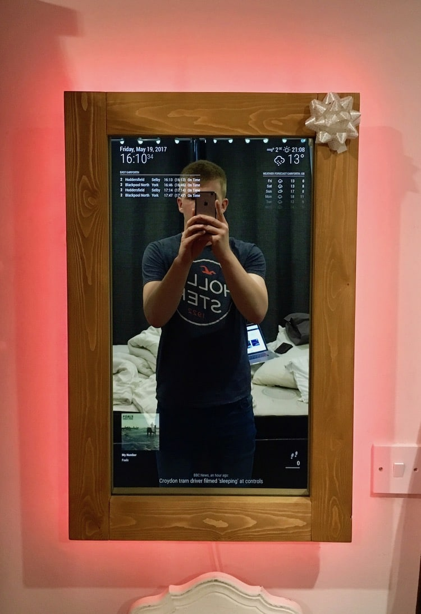
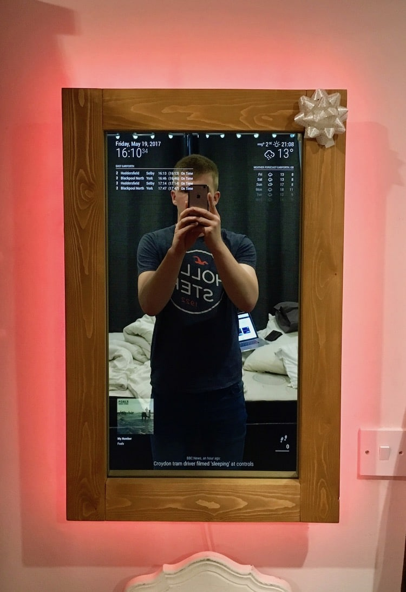
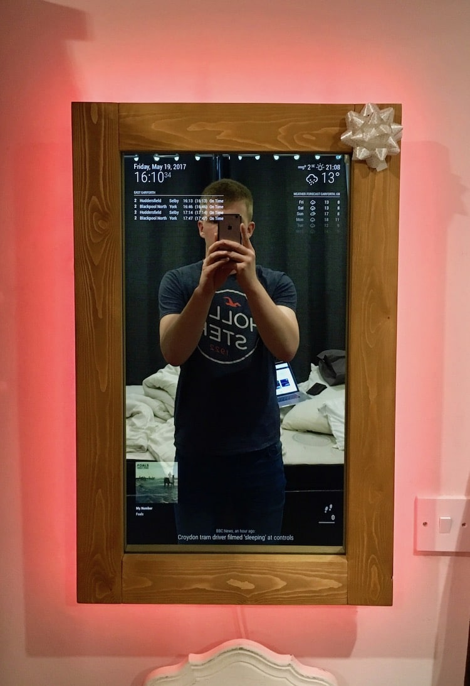

Tutotial 1: Introduction to Processing
Tutotial 1: Slides for P5js and HTML turtorial: P5jsandHTML.pptx
Tutotial 1 video for P5js and HTML turtorial: P5jsandHTML video
Tutotial 2: Slides for Twitter, HealthKit, and Firebase: TwitterHealthKitFirebase.pptx
Tutotial 2 video for Twitter and HealthKit BACK-end: Twitter and HealthKit video
Tutotial 3: Display draggable tweets using P5.JS: DisplayingTweetsWithP5JS.pptx
Tutotial 3 video for Twitter and HealthKit FRONT-end: Twitter and HealthKit FRONT END
Source codes for tutorial 2 and 3.
Tutotial 4: Slides for P5js examples : camera, weather, NYTime, Music player Presentation Slide
Tutotial 4a video for camera and weather: at 27th minute
Tutotial 5: Calendar
Example 1 My google calendar
Example 2 Challenge of building a Calendar with Pure JavaScript and source code
We can build the calendar purely in P5js?
Google Calendar Create API and Setting the project
